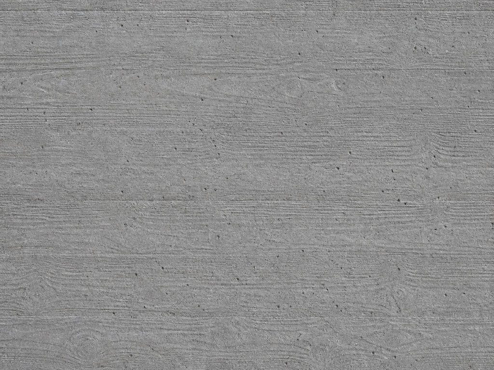
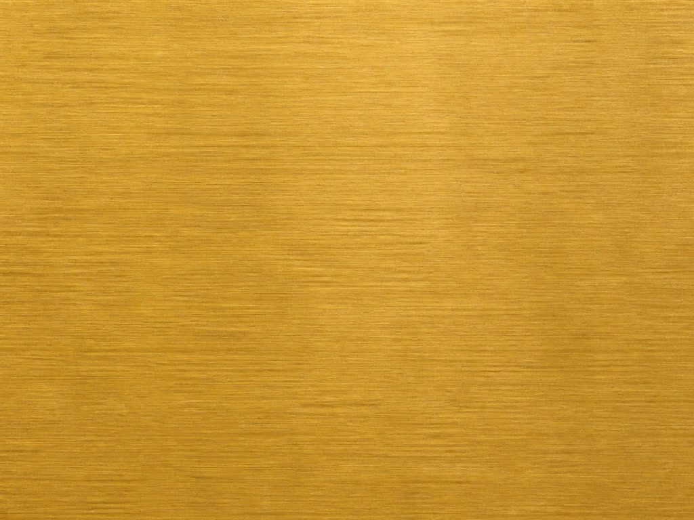

Finishes and materials schedule
Warehouse conversion, 14 units. Issued for construction.
Three changes from Rev B, all in the common parts: concrete finish tightened to F3, brass ironmongery substituted for satin nickel, and the acoustic lining in the stair core increased to 50 mm. Rev B is superseded and must be withdrawn from site.
Two materials do the work in the common parts, and everything else defers to them. The palette is deliberately short: fewer materials, better junctions, and a building that can be repaired from stock in twenty years.

Material study — generated, not a sampleIn-situ concrete
Board-marked, F3 to the common parts, boards 150 mm sawn softwood laid horizontal. No release agent staining, no patching without approval.

Material study — generated, not a sampleUnlacquered brass
Ironmongery, handrail cappings and signage plates. Unlacquered: it will darken unevenly where it is touched, which is the intent and is not a defect.
The images above are studies for tone only. Approval is against the physical sample panels held at the site office — 1.2 × 1.2 m for concrete, 300 mm square for metalwork. Nothing is approved from a print.
| Ref | Location | Element | Specification | Area m² |
|---|---|---|---|---|
| C-01 | Entrance hall | Floor | Power-floated concrete, sealed, matt | 64 |
| C-02 | Entrance hall | Wall | In-situ concrete F3, board-marked | 148 |
| C-03 | Entrance hall | Ceiling | Exposed soffit, sprayed limewash, 2 coats | 64 |
| C-04 | Stair core | Wall | Acoustic lining 50 mm, plaster skim, eggshell | 212 |
| C-05 | Stair core | Handrail | Unlacquered brass, 42 mm, brushed | — |
| C-06 | Lift lobby | Floor | Terrazzo, 20 mm, grey aggregate, honed | 38 |
| Item | With | Needed by | Status |
|---|---|---|---|
| Concrete panel, second pour | Contractor | 2027.03.20 | Awaiting |
| Brass sample, brushed | Sallow & Frayne | 2027.03.27 | Approved |
| Terrazzo aggregate mix | Client | 2027.04.03 | Overdue |